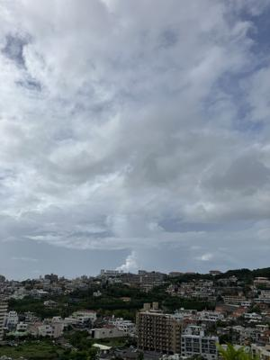
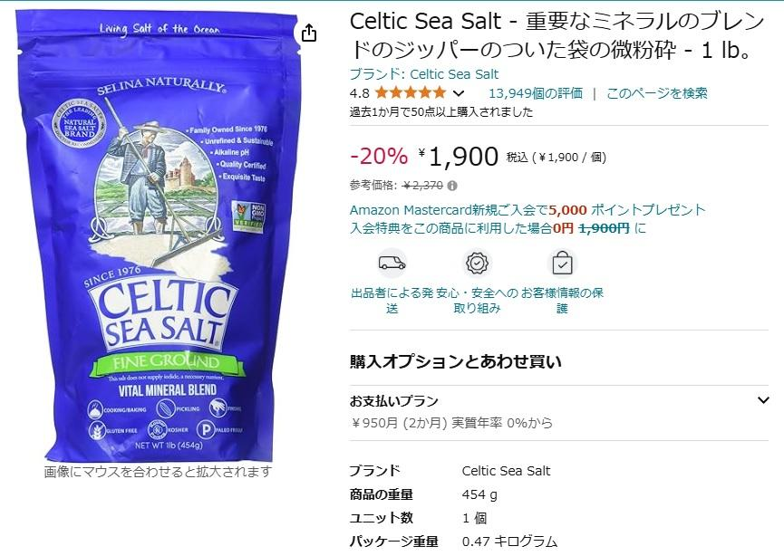
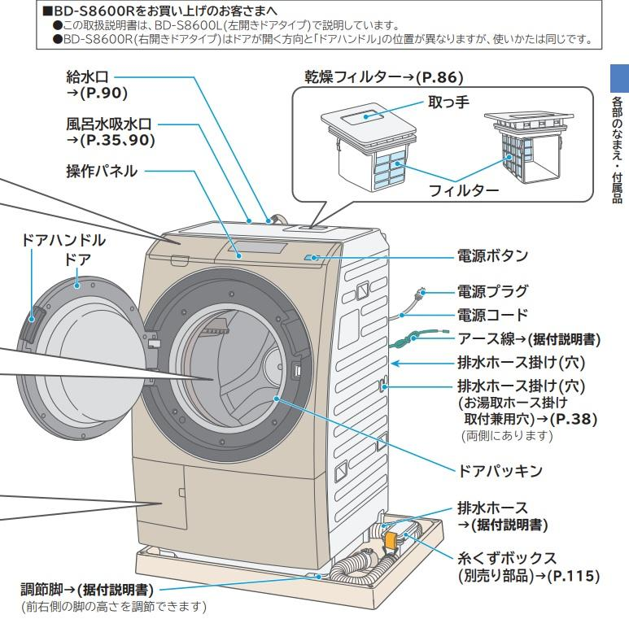

うるがいの話 ある日
最新: 水と塩【うるがいの話 ある日】とは 一日だけのプログです
『うるがいの話』の最新一日だけのプログで、通信料が少なく経済的だ。カニの画像をクリックすると全ての日付が載る『うるがいの話』サイトを表示します
|
|
【うるがいの話】 うるがい(ｳﾙｶﾞｲ urugai)とは、『もずくがに』の名前でとても大きくなります。 |
|---|---|
|
|
【カミマヤーの話】 猫のことを方言でマヤーといいます。カミマヤー（kamimayaa）とは、神の猫のことです。 |
|
【たながぁの音楽】 たながぁ（ﾀﾅｶﾞｰ tanagaa）とは手長えびのことで、何種類かあり大きいのは車 エビぐらいになります。 |

|
【ぶながぁの話】 ぶながぁ(ﾌﾞﾅｶﾞｰ bunagaa)とは、赤い髪の毛、赤い身体、そして身長は１ｍ２０ｃｍ ぐらい、川の蟹を食べているの目撃された。場所は沖縄県国頭郡大宜味村のと ある村僕の隣近所に住んでいる爺さんから、聞いた話です。 |
|
|
【ギーマの話】 ギーマ(giima)とは、山原の里山に咲くスズランに似た、 花を付けます。実は食べられます、 気が付くと口の周りが紫になっています。 |
2024年07月24日 (水）水と塩
21:10

尿路結石の予防のためには『１日に２Ｌ以上の水分を摂る』、ホイ、分かっ
ている！、先週から、実践しているが大変。師匠から参考になる動画を教え
もらう。
バーバラ・オニール〜水と塩＊このこと・・・

とてもいいっす、アマゾンで４５９ｇの『ケルティックソルト』を注文し今
日届く予定だったが、夜９時まで来なかった。動画を参考に高血圧治療中な
ので、ゴマ粒一つを舌に載せることにする。カミングァの長嶺伊佐雄（霊能
力がある、故人）のオジサンが『暑い時にはマースを舐めるのがいいよ』と
話していたことを思いだす。以前職場に２リットルのペットボトルの水を机
の上に置いてたタチバさんは、凄すぎる！。

きのう、傘を持ってヨメとウォーキングに行った。当初は日差しで、傘をさ
して歩いていたが、金城ダムあたりから何やら、降りそうな気配がした。あ
れよあれよという間に、傘が意味をなさないような土砂降り、台風の影響で
風でよこなぐりの雨、たまらず芸大のビルで雨宿り。
天気予報では、しばらくベランダでは洗濯物を干せそうにない。雨で濡れた
洗濯物を夜から、洗濯する。いったん、洗濯機から出し、洗面所で除湿機で
一時間除湿（かなり乾く）。そして、仕上げに２０１３年に購入した『なな
め型ドラム式洗濯乾燥機』で乾燥させた。

この洗濯機を設置するときには、一度同じようなドラム式洗濯乾燥機を購入
いざ設置しようとすると家に収まらなくて、家電量販店にお願いして家に設
置できるサイズのもので買い替えた経緯がある苦労した。もう、十年以上も
たつ、故障すると困る電化製品である。
『台風３号：与那国島で最大瞬間風速５０．２メートル』なかなか強烈。
２１時００分 ビットコインの総資産 ￥２９、６７４（↓６３５）